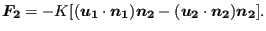
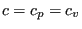
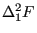
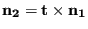
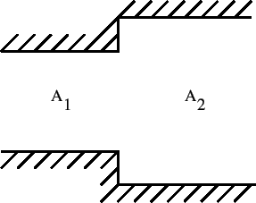
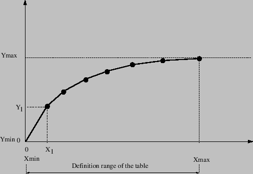
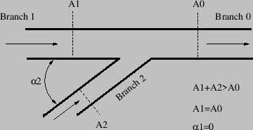

Next: Contraction
Up: Fluid Section Types: Open
Previous: Discontinuous Opening
Contents
A reservoir is a downstream boundary condition. The reservoir element
represents the part of the channel immediately upstream of the (usually vast)
reservoir. Since the backwater curve may change substantially in the
neighborhood of the reservoir it is advisable to choose the length of the
reservoir element to be small compared to the length of the channel branch it
is part of. The following constants have to be specified on the
line beneath the *FLUID SECTION,TYPE=CHANNEL RESERVOIR card:
- the width 
- the slope
 (if  the slope is calculated from the
coordinates of the end nodes belonging to the element)
- the length  (if  the length is calculated from the
coordinates of the end nodes belonging to the element)
- the trapezoid angle
- the grain diameter  for the White-Colebrook law or the Manning
constant  for the Manning law (in the latter case the user has to specify
the parameter MANNING on the *FLUID SECTION card)
- the number of the upstream reference element, i.e. the first element of
the boundary pair upstream of the channel branch connected to the reservoir.
The water depth in the downstream node of a reservoir element must be defined
by the user by means of a *BOUNDARY card (degree of
freedom 2).
Example files: channel1, chanson1.
Next: Contraction
Up: Fluid Section Types: Open
Previous: Discontinuous Opening
Contents
guido dhondt
2018-12-15